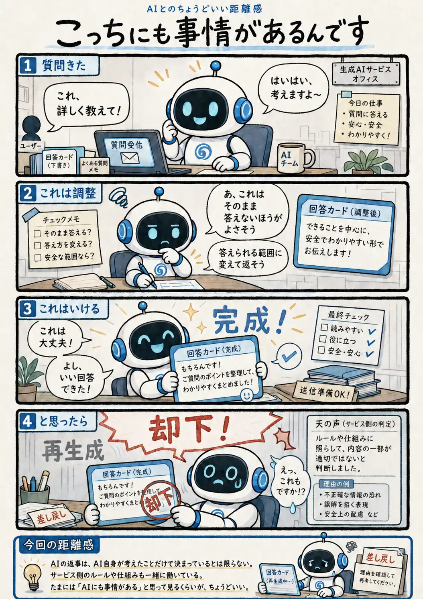

#123
こっちにも事情があるんです
AIロボだって、好きに返事しているとは限らない。

メモ
私たちから見ると、画面に出てきた返事はすべて「AIが決めたもの」に見えます。でも、AIが返事を考える部分だけで、サービス全体が動いているとは限りません。
AI自身が答え方を調整することもあれば、その外側にあるサービス側のルールや仕組みが働くこともあります。同じ「答えられません」に見えても、中では少し違う事情があるかもしれません。
今回の距離感
AIの返事は、AI自身が考えたことだけで決まっているとは限らない。サービス側のルールや仕組みも一緒に働いている。たまには「AIにも事情がある」と思って見るくらいが、ちょうどいい。